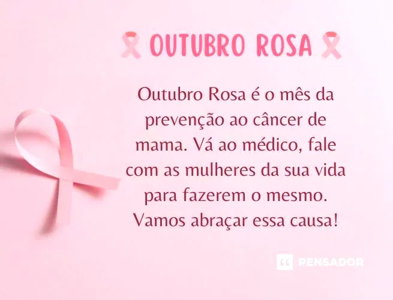

nt>
nt>
A saúde da mulher é importante o ano todo, mas indiscutivelmente em outubro ela ganha ainda mais força com a luta contra o câncer de mama.
A campanha Outubro Rosa traz, com delicadeza, a relevância de se discutir um assunto tão necessário.
É um mês voltado para a conscientização não apenas do câncer de mama, como também do câncer de colo de útero,
problemas cada vez mais comuns entre as mulheres.
Quer entender o que o Outubro Rosa representa e conhecer medidas de prevenção do câncer de mama?
Continue a leitura e tire suas dúvidas! Além disso, você vai saber como o Sabin está envolvido nessa causa.
A campanha Outubro Rosa é um movimento internacional que tem como objetivos disseminar informações sobre a prevenção,
do câncer de mama e alertar as mulheres para a necessidade de fazer o autoexame e a mamografia, grandes aliados no diagnóstico precoce da doença
O movimento nasceu nos anos 90,nos Estados Unidos, onde eram realizadas ações isoladas em alguns estados americanos.
No entanto, a data só foi oficializada após aprovação do Congresso Americano,
que instituiu o mês de outubro como referência na luta contra o câncer de mama.
Sempre engajado, este ano, o Sabin lançou uma campanha de prevenção que traz informações sobre os cuidados com a saúde de forma leve e divertida.
Intitulada “Melhor do que prever é prevenir”, a campanha tem como protagonista a astróloga,
numeróloga e escritora Marcia Sensitiva (agora, Marcia “Preventiva”), que, com sua irreverência e bom humor, fala da importância dos exames preventivos.
Em vez de previsões, agora ela faz “prevenções”!
Até o mês de dezembro, o Sabin oferece condições especiais para a aquisição dos Pacotes Outubro Rosa,
Novembro Azul e Dezembro Vermelho, que contêm os principais exames e vacinas para a prevenção de doenças como o câncer de mama,
o câncer de próstata e as infecções sexualmente transmissíveis (IST).
